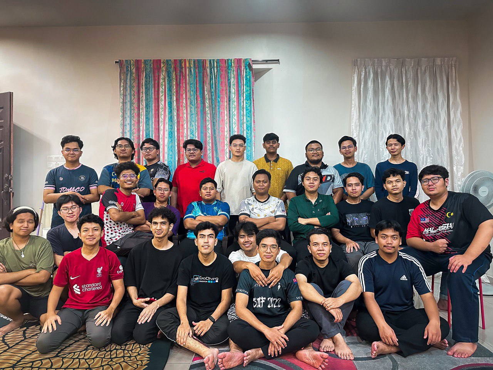
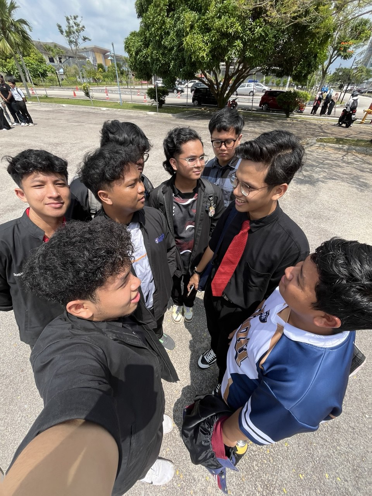
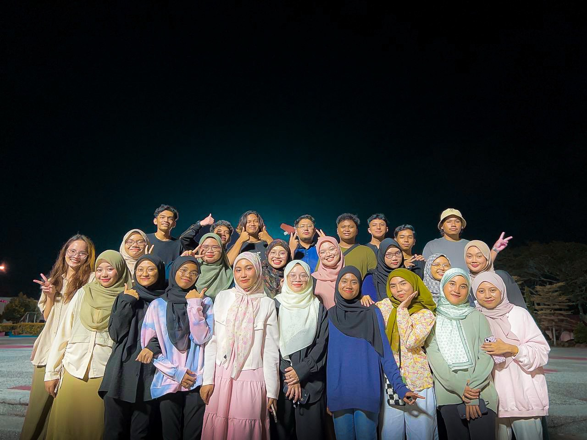

Campus life has been a whirlwind of new experiences, friendships, and personal growth. It all started in the first week with "Minggu Haluan Siswa," an orientation event packed with activities to help us navigate this new chapter. That week, I met so many new people, not only from my section or course but from other departments as well. After the orientation, the real journey began as we dove into our study sessions. I found myself bonding with friends from all over campus, and together, we shared laughs, study sessions, and so many memorable moments. It’s been a time of learning – not just academically, but also about life, friendship, and independence. In the second semester, we grew even closer, spending weekends going to the mall, having dinners with our section, and unwinding with ping-pong matches. By the third semester, I moved off-campus with nine friends to Parit Raja. Living together added a new layer to our friendships, with countless memories created beyond campus. My friend Rohma has been a constant companion through all these adventures, from campus events to our hike up Gunung Ledang. Looking forward, I’m hopeful that these bonds will continue to grow stronger and that the experiences I gain will guide me through my career and life. Campus life has been more than I ever imagined, and I’m excited to see what’s next.
  